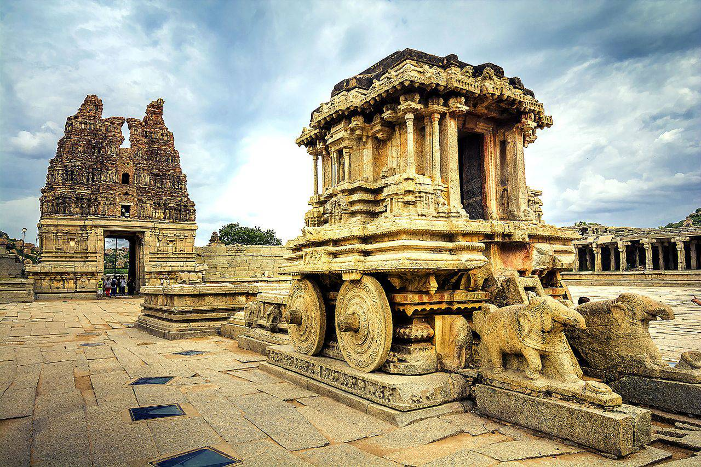

Coastal Karnataka
Coastal Karnataka offers pristine beaches, lush greenery, and rich cultural heritage. Attractions include Gokarna's serene beaches, Udupi's temples, and Murudeshwar's towering Shiva statue.

North Karnataka
North Karnataka is rich in heritage, featuring UNESCO sites like Hampi and Badami. Wildlife enthusiasts can explore Dandeli’s forests and river adventures.

South Karnataka
South Karnataka features the heritage city of Mysuru, the serene Coorg coffee plantations, Chikkamagaluru’s green hills, and Bandipur National Park’s thrilling wildlife safaris.